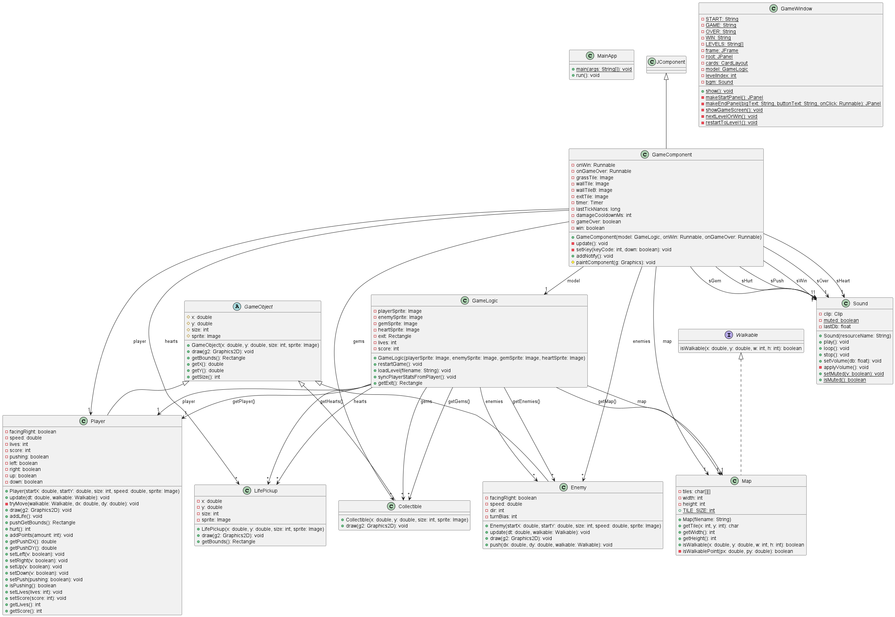
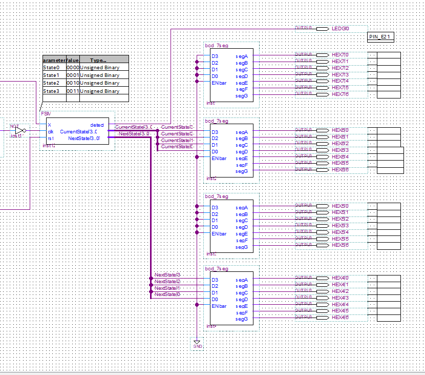
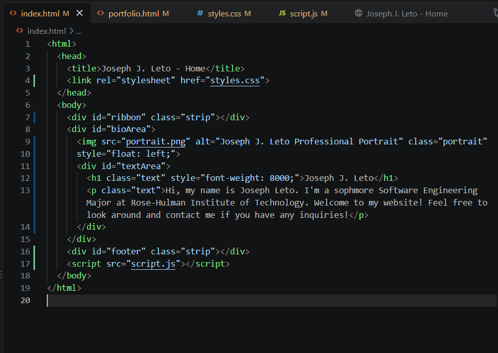

Projects

Maze Game
My first project. Our team used object-oriented design to build a UML diagram, and after several weeks we had a fully playable game.
Built in Java with the Eclipse IDE.
View on GitHub
Guitar Hero Game
My most difficult project so far. A partner and I spent 10 weeks building a Guitar Hero style game from logic gates, programming an FPGA board to display it.
Built with Intel Quartus Prime. No public repository.

Portfolio Website
My third major project. It started as web design practice, and I plan to keep improving it throughout college.
Built in Visual Studio Code.
View on GitHub